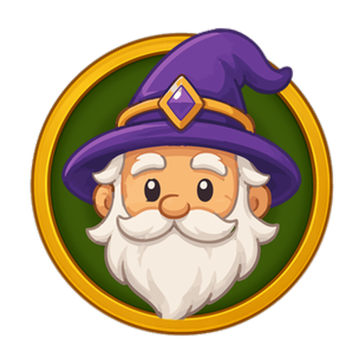
MAŁA PRÓBKA GRY
Znajdź dwie pary
Odkryj dowolną kartę.
01 / MINIGRA
Gra na Pamięć
Odkrywaj karty i łącz symbole w pary. Zapamiętuj ich położenie i znajdź wszystkie pary. W tej małej demonstracji możesz od razu spróbować.
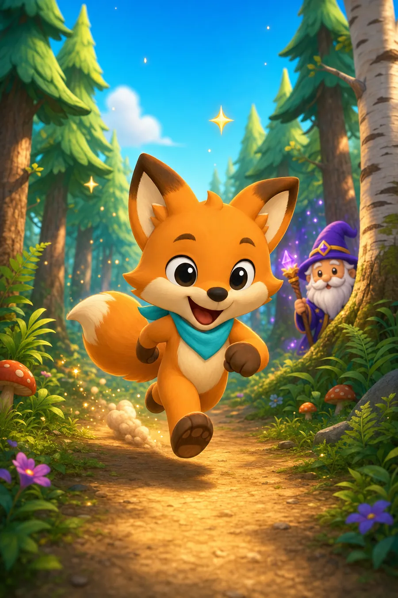
GAME DESIGN / UI & UX / ŚWIAT 3D
Edukacyjna przygoda, w której ciekawość prowadzi do odkryć. Razem z Liskiem poznajesz świat, bawisz się i zostawiasz w nim swój ślad.
Odkryj świat gry01 / ŚWIAT
Świat jest małą, trójwymiarową planetą. Lisek przemierza ją dookoła, spotyka Wizkora, zbiera gwiazdki i odkrywa kolejne aktywności.
To wspólne miejsce dla przygód, gier i spokojnego tworzenia. Zamiast osobnych ekranów — świat, do którego chce się wracać.
Rusz przed siebie. Zobacz, co kryje się za horyzontem.
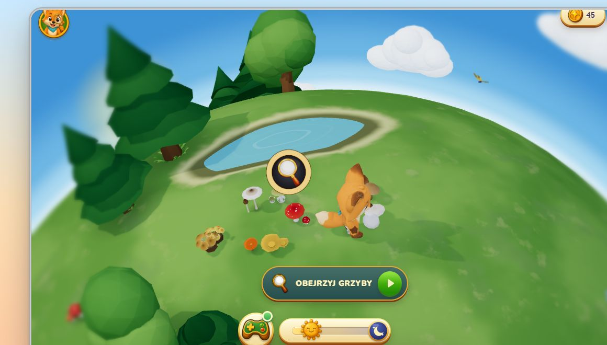
02 / GRY
Pamięć, ruch i matematyka mają tu własny rytm. Dwie gry, dwa sposoby odkrywania.

MAŁA PRÓBKA GRY
01 / MINIGRA
Odkrywaj karty i łącz symbole w pary. Zapamiętuj ich położenie i znajdź wszystkie pary. W tej małej demonstracji możesz od razu spróbować.
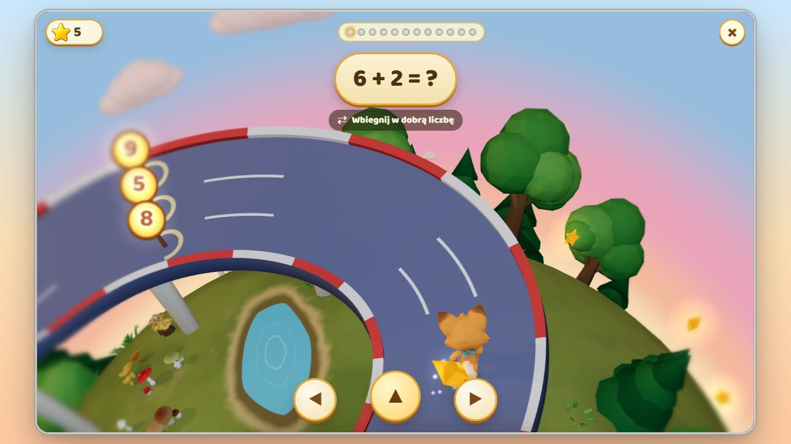
02 / MINIGRA
Na mapie wyrasta autostrada. Lisek rusza przed siebie — zmieniaj pasy, skacz po gwiazdki i wybieraj liczby odpowiadające działaniom. Po biegu droga chowa się, a świat wraca na swoje miejsce.
03 / SYSTEM KOMUNIKACJI
Interfejs łączy zadania w jedną przygodę. Zaprasza, pomaga wybrać kolejny krok i odpowiada na działanie gracza.
Dotknij etapu lub przejdź przez pokaz. Przykład: zadanie zebrania gwiazdek.
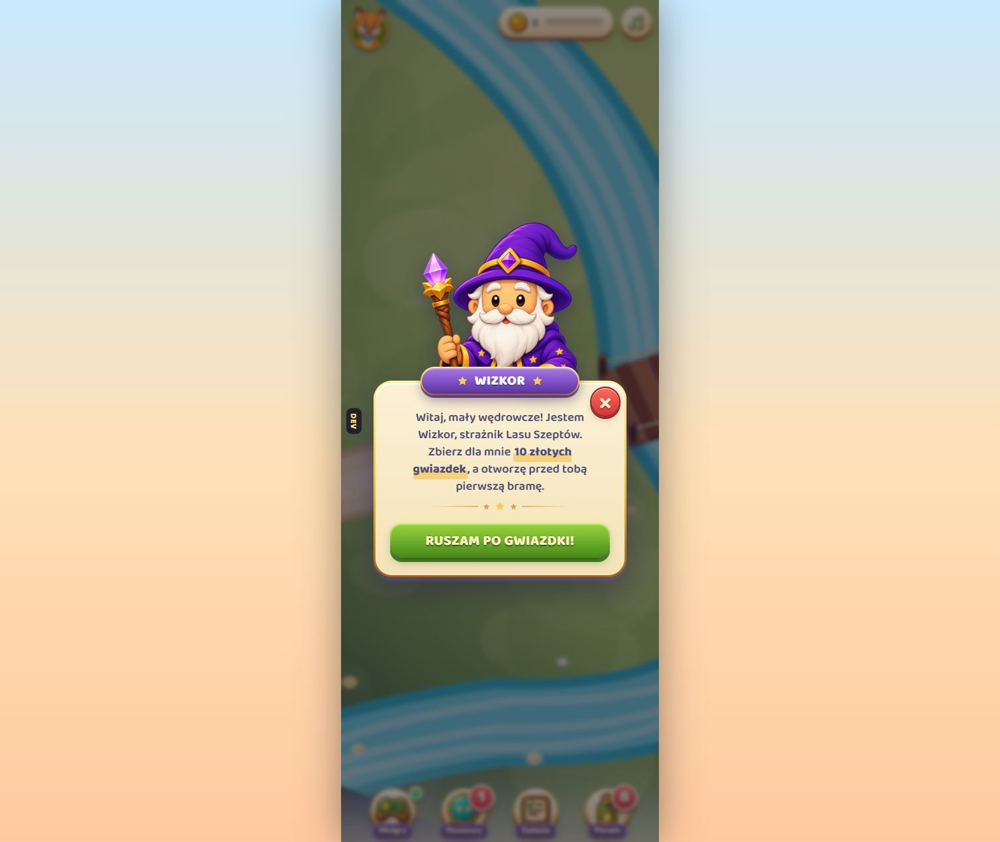
Wizkor zaprasza do zebrania gwiazdek. Postać, prosty cel i jedna główna akcja pomagają rozpocząć zadanie.
JEDEN JĘZYK KOMUNIKACJI
Papier niesie treść, fiolet towarzyszy magii, a zieleń zaprasza do działania. Ta sama logika wraca w całej grze.
04 / WIĘCEJ NIŻ MINIGRY
Na planecie jest też miejsce na obserwację, własne pomysły i spokojną zabawę.
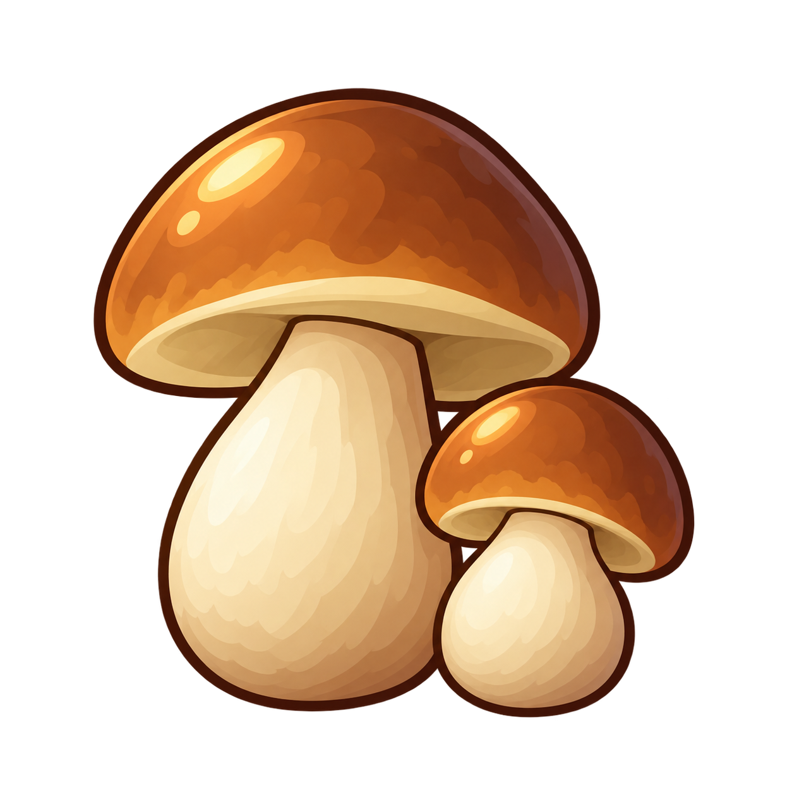
Obracaj modele 3D, porównuj cechy i poznawaj grzybowe sobowtóry.
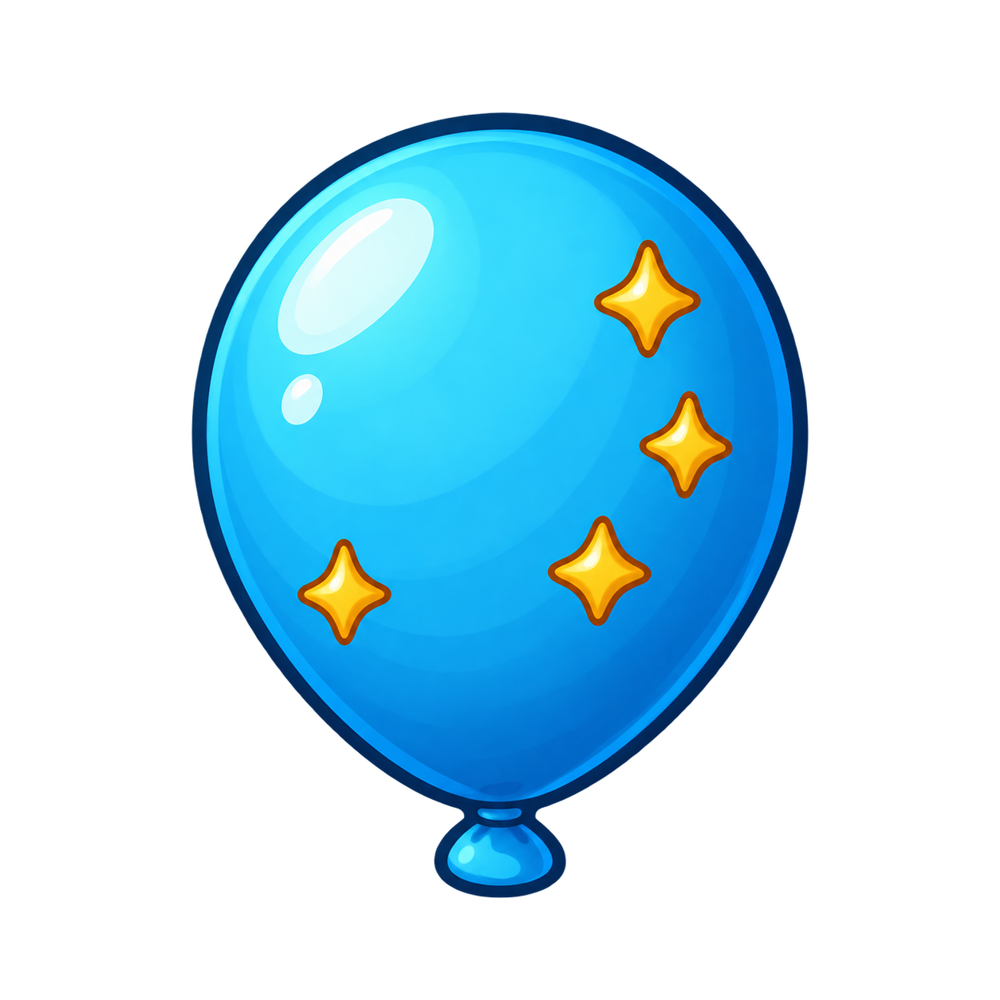
Prowadź skrzydlatego Liska po trasie i zbieraj baloniki nad planetą.
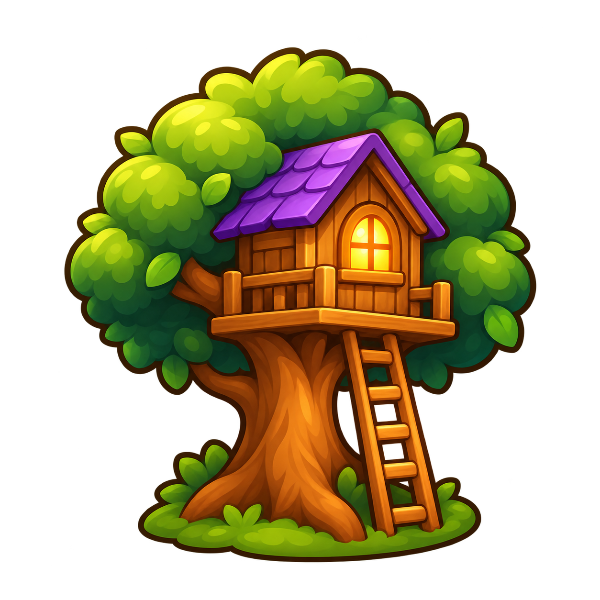
Własny zakątek świata i ramka, w której można zostawić swój rysunek.
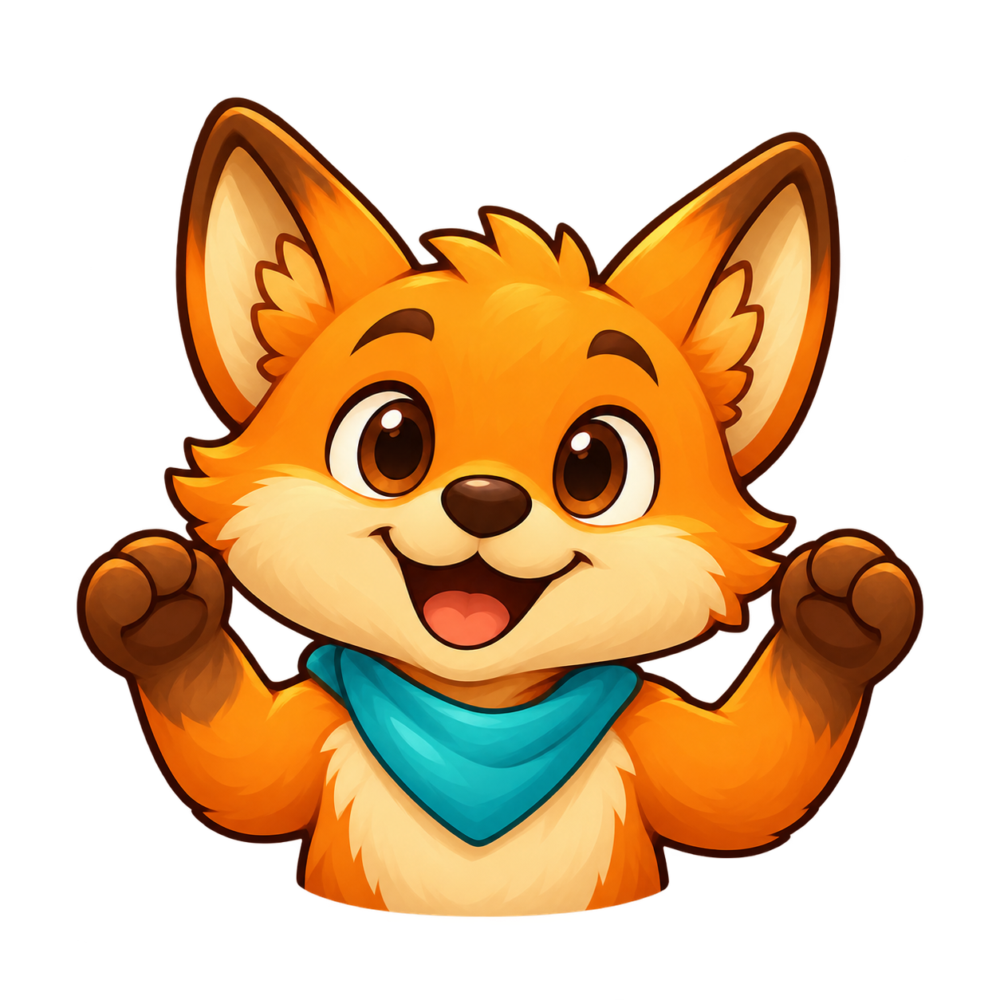
Krótka aktywność, którą można zabrać także poza ekran.
05 / POSTACIE
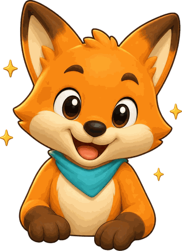
Bohater gracza
To z nim przemierzasz planetę, bawisz się, odkrywasz nowe miejsca i zostawiasz swoje pomysły w świecie.
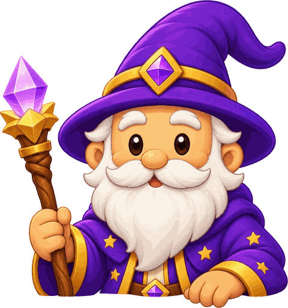
Przewodnik po świecie
Zaprasza do kolejnych odkryć, podpowiada i zauważa to, co udało się zrobić.
06 / POZA EKRANEM
Przygoda może stać się początkiem małego odkrycia także w codziennym świecie. Obserwuj przyrodę, szukaj podobieństw, rysuj i twórz — we własnym tempie.
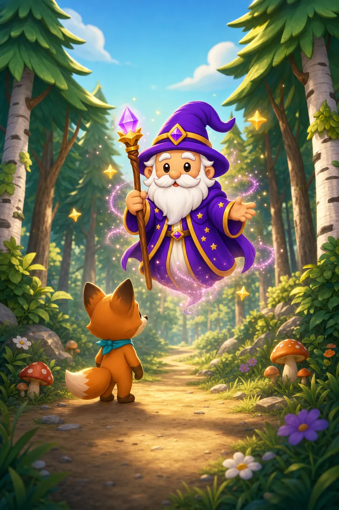
07 / PROJEKT
Projektowanie gry to łączenie mechanik, postaci, przestrzeni i komunikacji. Każda z tych warstw pomaga zbudować jedną, spójną przygodę.